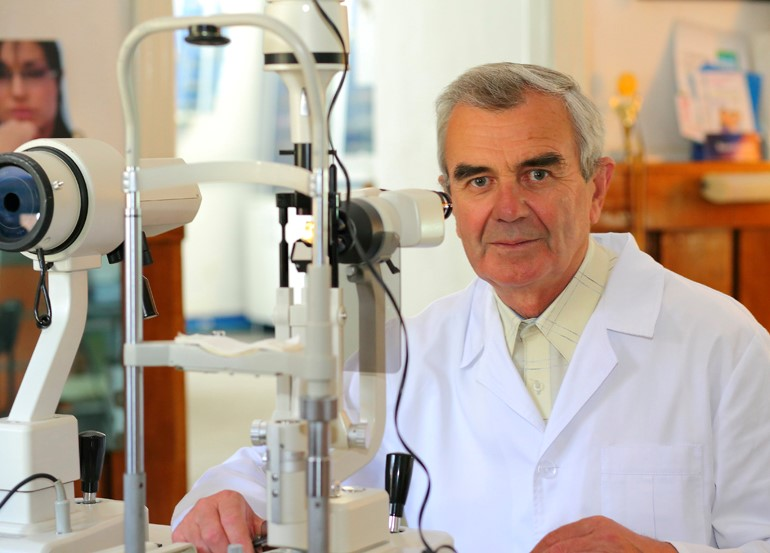
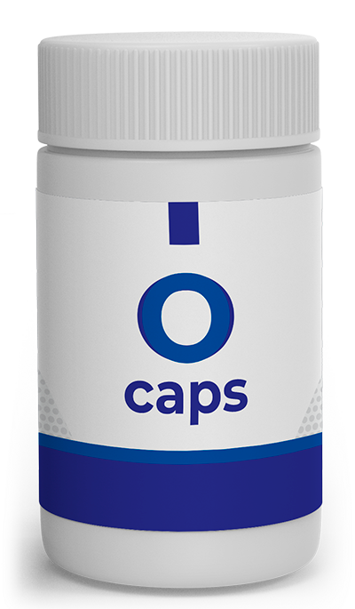

Adnan Hodžić, študent zadnjega letnika Medicinske fakultete Univerze Goethe, je za odkritje metode za povrnitev vida v kateri koli starosti prejel najprestižnejšo evropsko nagrado za medicinske inovacije. Seveda ta dobra novica ni bila edina točka našega dnevnega reda!
Na kongresu oftalmologije v Evropi se je letos zgodilo nekaj neverjetnega. Vsi gledalci so ploskali tistemu, ki je bil na odru le 10 minut. Ta oseba je bil bosanski študent Adnan Hodžić, ki je živel in študiral v Nemčiji. Predlagal je uporabo edinstvene formule.
Adnan Hodžić je ponudil odlično rešitev, odgovornost za njeno izvedbo pa je prevzel največji raziskovalni center v Evropi. Pri razvoju zdravila so sodelovali strokovnjaki iz svetovno znanih raziskovalnih centrov. Zdravilo je bilo razvito in danes daje odlične rezultate.
Kako lahko novo zdravilo izboljša vid milijonom ljudi po vsem svetu in kako lahko dobite to zdravilo? V naslednjem članku boste našli odgovore na ta in mnoga druga vprašanja.
Novinar: "Adnane, ti si eden najpametnejših študentov medicine na svetu. Od kod ideja za izdelavo tega izdelka?"
Dogodek, ki mi je služil kot glavni motiv, je bil naslednji: pred nekaj leti je mama začela postopoma izgubljati vid: ne očala ne leče niso pomagale. Njen vid se je še naprej slabšal. Datum operacije je bil določen, vendar so ji teden dni pred operacijo povedali, da je zaradi pomanjkanja krvi v leči in očesnem delu progresivno slepa. To je pomenilo, da operacije ni bilo mogoče izvesti.
Moja babica je iz istega razloga popolnoma izgubila vid. Takrat sem začel raziskovati težave z očesnimi boleznimi in njihovo zdravljenje. Bil sem šokiran, ko sem spoznal, da je večina zdravil v lekarnah neuporabnih kemičnih spojin, ki stvari še poslabšajo. Moja mama jih je uporabljala vsak dan.
V zadnjih treh letih sem to temo v celoti raziskal. Pravzaprav je izdelek, o katerem vsi govorijo, nastal v procesu pisanja moje nove diplomske naloge o zdravljenju očesnih bolezni. Bilo mi je jasno, da sem našel nekaj novega. Nisem pa si mislil, da bo to vzbudilo toliko zanimanja različnih institucij.
S čim ste se soočili v procesu?
Takoj ko so se pojavila poročila o mojem načinu zdravljenja, sem takoj začel prejemati ponudbe za prodajo svojega izuma. Nemci so ponudili 120.000 evrov, velike in resne ponudbe pa je poslala tudi ameriška farmacevtska družba. Zdaj sem spremenil telefonsko številko in ne uporabljam družbenih omrežij, ker me jezijo nakupovalne ponudbe, ki se dnevno pošiljajo na vse komunikacijske kanale.
Ampak kolikor vem, niste prodali formule?
Seveda ne. Morda se zdi sliši ostro, vendar tega izdelka nisem izumil, da bi farmacevtska podjetja naredil bolj dobičkonosne. Kaj se zgodi, če prodam formulo? Pridobili bodo patente, prepovedali nadaljnjo proizvodnjo in zvišali ceno zdravila. Sem mlad, a nisem idiot. Bolniki v tem primeru so neozdravljivi. En tuji zdravnik mi je rekel, da bi moralo takšno zdravilo stati vsaj 3000 dolarjev, a kdo ga lahko kupi za tak denar?
Moj cilj je, da lahko ljudje z majhnim proračunom enostavno kupijo ta izdelek in si gladko povrnejo vid, ne da bi se zanašali na druga zdravila, drage očesne operacije, očala ali leče ...
Ko sem torej dobil ponudbo za pomoč pri razvoju zdravila, sem jo takoj sprejel. Sodelujemo z najboljšimi specialisti na Inštitutu za oftalmološke raziskave. To je neverjetna izkušnja. Moje raziskave so končane in moj izdelek je popolnoma pripravljen za uporabo.
O tem zdravilu smo se pogovarjali z zdravnikom in oftalmologom s 35-letnimi izkušnjami Damirjem Hrustanovićem:
Novinar: "V čem je bistvo Adnanove ideje? Ali pomaga pri povrnitvi vida v kateri koli starosti?"
Adnanova ideja je dala nov pristop k zdravljenju vida, tudi pri dednih boleznih. Danes se strokovnjaki zavedajo, da lahko vsa zdravila pomagajo le v zgodnjih fazah. Poleg tega bolnik sprva pogosto dobi veliko zdravil, kar le odloži. In takoj, ko oseba izgubi vid, jo takoj pošljejo na operacijo.
Zanje je to delo, ki jim omogoča, da lahko ves čas služijo ... nihče ne poskuša za vedno ozdraviti bolnika.
V zgodnjih 2000-ih letih so znanstveniki odkrili, da se 90 % težav z vidom pojavlja le iz enega razloga - nezadostne prekrvavitve zrkla, ki lečo, belo snov in roženico neguje z bistvenimi snovmi. Če odpravimo ta osnovni vzrok, lahko skoraj popolnoma odpravimo drage očesne operacije.
Adnanova ideja pomaga uravnavati pretok krvi v oči. To zagotavlja popolno izginotje tveganja slepote v začetni fazi bolezni. Vendar je težko ozdraviti težke faze, ko gre za popolno slepoto. Zato so bila potrebna prizadevanja velikega števila zdravnikov in medicinskih strokovnjakov, da bi razvili učinkovit način za povrnitev vida vsakemu bolniku.
Novinar: A verjame se, da je brez operacije nemogoče spet videti, še posebej po 40. letu ...
Ni res. To je napaka velikih farmacevtskih podjetij, ki si želijo več dobička. Vsak sistem telesa je mogoče obnoviti, dovolj je, da se odpravijo vnetni procesi, izboljša krvni obtok, pospeši odstranjevanje odmrlih celic in toksinov.
Novinar: In kako so se v preteklosti obravnavale težave z vidom? Lekarne namreč imajo za ta namen veliko zdravil.
Dejstvo je, da je teh zdravil veliko. Toda ta zdravila le blažijo simptome, to je vse, kar lahko storijo. V kratkem času se vaš vid izboljša. Toda na splošno je bolj verjetno, da bodo imeli negativen vpliv na vid kot pozitiven. Tu je imel Adnan popolnoma prav. Če pogledamo zdravilne formule v lekarnah, bo vsak specialist razumel, da jih je mogoče uporabiti le v skrajnem primeru.
Novinar: "Izkazalo se je, da nov izdelek pomaga popolnoma obnoviti vid?"
Glavni namen zdravila je zagotoviti pretok krvi v očesu z regeneracijo poškodovanega tkiva. En odmerek je dovolj za aktiviranje več kot 930.000 celic, ki so neposredno vključene v proces obnavljanja vida med celotnim zdravljenjem. To je osnovno načelo zdravljenja.
Te teme se lotevamo na nenavaden način. Naše zdravilo ni le še en niz kemičnih formul. Je edinstvena kombinacija visoko koncentriranih rastlinskih izvlečkov. Posledično je učinkovit in varen za oči.
Nekaj dni po začetku zdravljenja se začne vaš vid izboljševati. Slike postanejo jasne, rdečina in vnetje v očesu izgineta. Začne se regeneracija celic in vaš vid se vrne. Tudi za razliko od drugih zdravil imajo sestavine O-Caps pozitiven učinek na majhne žile zrkla.
O-Caps je prehransko dopolnilo na osnovi beta karotena, vitamina C, cinka in vitamina E. Cink pomaga ohranjati normalen vid in ščiti celice pred oksidativnim stresom. Med obroki je treba zaužiti eno kapsulo enkrat do dvakrat na dan. Opozoriti je treba, da izdelek ni namenjen ljudem, ki so preobčutljivi na sestavine, otrokom, nosečnicam in doječim materam. Ni priporočljivo uporabljati več kot tri mesece brez zdravniškega nadzora. Priporočenih dnevnih odmerkov ne smete preseči.
Novinar: Se bo zdravilo prodajalo tudi v lekarnah? Kakšna bo cena?
Veste, ko je postalo jasno, da imamo nekaj res dragocenega, so nas farmacevti napadli z vseh zornih kotov. Adnanu so najprej ponudili kupovino njegove formule. Ne zato, da bi začeli proizvajati zdravilo, ampak da bi to preprečili. Različna neučinkovita zdravila za izboljšanje vida zasedajo pomembno nišo na svetovnem farmacevtskem trgu. Ta izdelek lahko bistveno to spremeni.
Navsezadnje bodo imeli bolniki le po eni terapiji z O Caps možnost, da si trajno povrnejo vid, ne glede na starost. Drage laserske operacije bodo nepotrebne, nihče ne bo porabljal denarja za stare načine zdravljenja.
Lekarne so partnerji farmacevtskih podjetij. In seveda ne želijo slišati o tem izdelku. Čeprav je trenutno edino zdravilo za očesne bolezni, ki ga uradno priporoča Center za zdravstvene vede, ki preprečuje nastanek zapletov pri slepoti.
Novinar: "Kako ga dobiti, če se zdravilo ne prodaja v lekarnah?"
Začeli smo z veliko oglaševalsko kampanjo v vseh medijih, da bi pritegnili pozornost ljudi na ta izdelek, in obljubili, da bomo podarili 1000 paketov "O-Caps" do inkluzivno.
Zato lahko v naši nagradni igri sodelujete vsi, ki želite dobiti O-Caps s popustom do 50%. Po tem bodo naši usposobljeni strokovnjaki stopili v stik z vami, da bi razvili prilagojen načrt zdravljenja z O-Caps. Ne glede na to, kje živite, lahko izdelek dostavimo kamor koli v Sloveniji. Izdelek pošljemo po hitri pošti neposredno na vaš naslov.Vsak lahko sodeluje v tem žrebu in osvoji glavno nagrado: do 50 % popust! Ta promocija, ki smo jo ustvarili za Slovenijo, želi seznaniti ljudi s tem izdelkom.

O-Caps